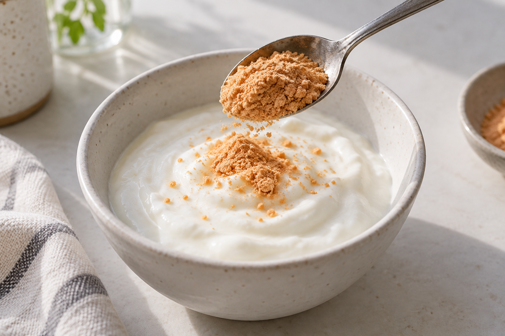

果実パウダーのある食卓
いつもの朝に、
果実をひとさじ。
ヨーグルトに混ぜる。飲みものに添える。
毎日の食卓で使う、果実パウダーの提案です。
架空商品のコンセプトです。実際の成分・味・使用量を示すものではありません。

01 / 素材を知る
02 / 表示を読む
果実パウダーのある食卓
ヨーグルトに混ぜる。飲みものに添える。
毎日の食卓で使う、果実パウダーの提案です。
架空商品のコンセプトです。実際の成分・味・使用量を示すものではありません。

01 / 素材を知る
02 / 表示を読む